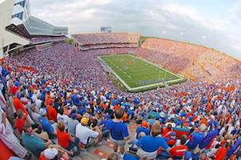

<!DOCTYPE html>
<html lang="en">
  <head>
    <meta charset="UTF-8" />
    <title>Leaflet Demo</title>
    <link href="css/leaflet.css" rel="stylesheet" />
    <link href="css/leaflet-style.css" rel="stylesheet" />
  </head>

  <body>

    <div id="map"></div>

    <script src="js/leaflet.js"></script>
    <script>

        var ufMap = L.map("map").setView([29.64620, -82.34931], 15);

        L.tileLayer("https://{s}.tile.openstreetmap.org/{z}/{x}/{y}.png",
            {
            maxZoom: 19,
        }).addTo(ufMap);

        var jSchool = L.marker([29.64796, -82.34755]).addTo(ufMap);

        jSchool.bindPopup("<a href = 'http://jou.ufl.edu/'> <College of journalism & comm> I learned here! </a>")

        var swamp = L.circle([29.64986, -82.34870],
        {
            color: "#FA4616",
            fillColor: "#FA4616",
            fillOpacity: 0.3,
            radius: 150
        }).addTo(ufMap)

        swamp.bindPopup("The Swamp. Go Gators ")

        var dorm = L.polygon([
            [29.64457, -82.34076],
             [29.64382, -82.34076],
             [29.64382, -82.33999],
             [29.64457, -82.33999],
        ],
                             {
            color: "#0021A5",
            fillColor: "#0021A5",
            fillOpacity: .3
        }).addTo(ufMap);

        function onMapClick(event){
            console.log(event.latlng)
        }

        ufMap.on("click", onMapClick);
      </script>

  </body>
</html>
